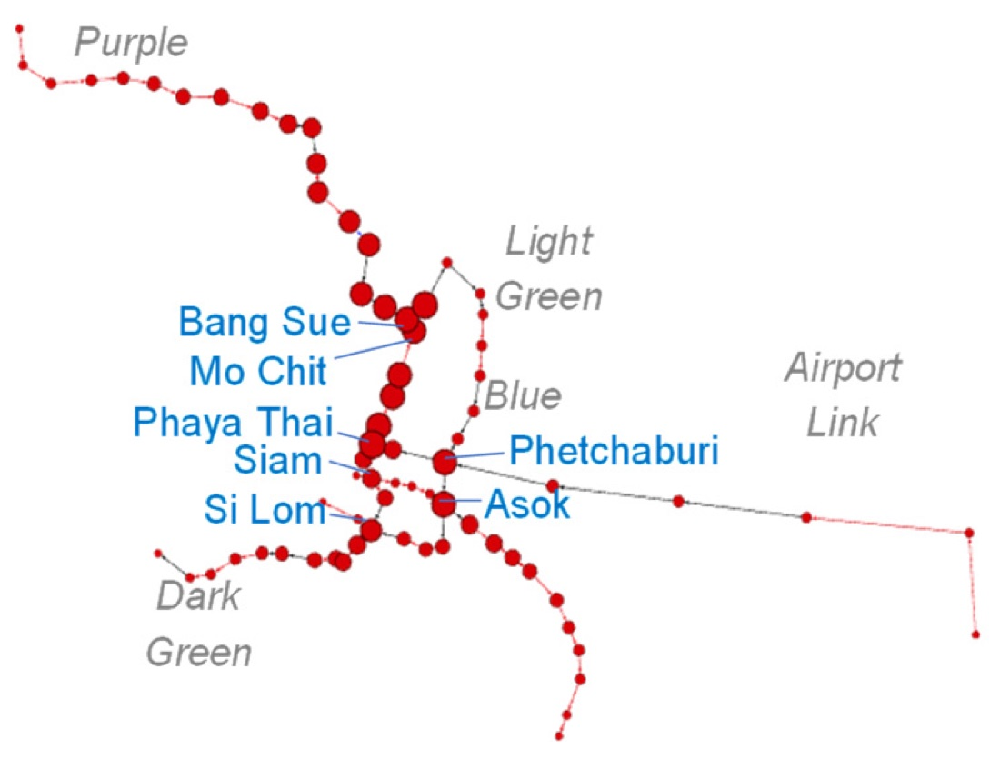
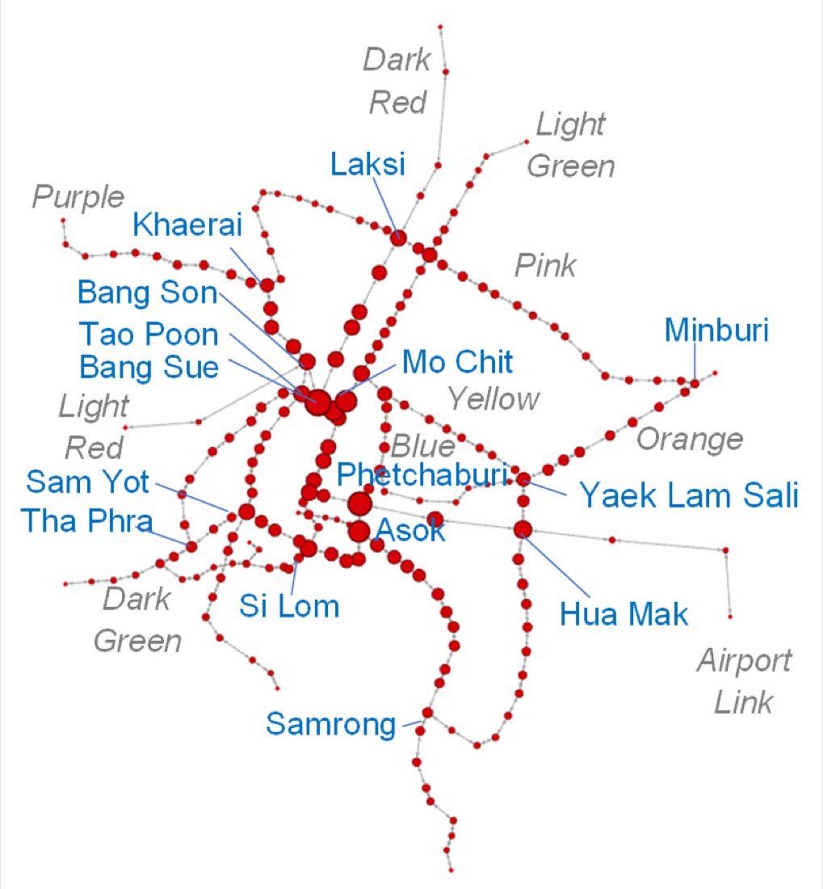
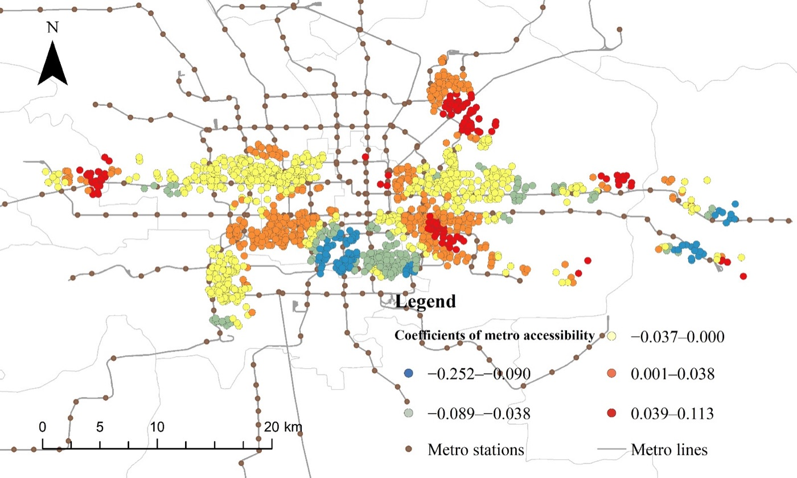
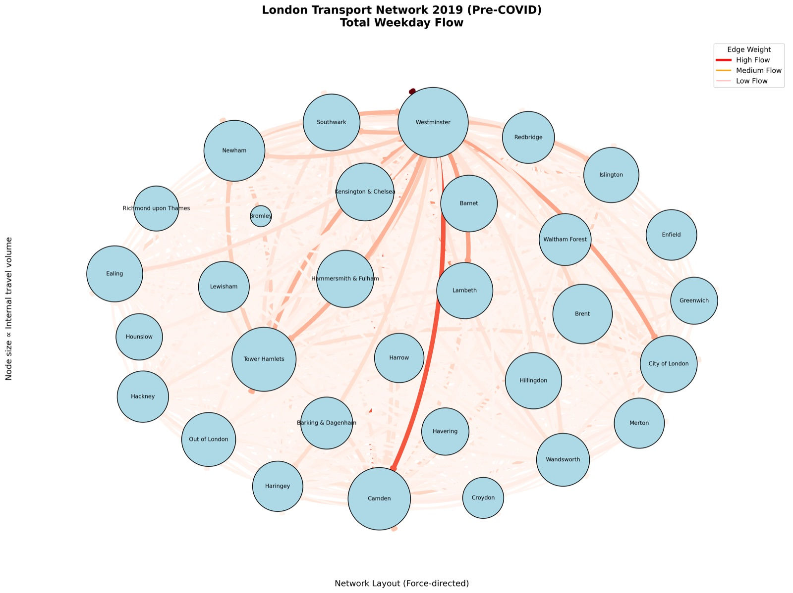
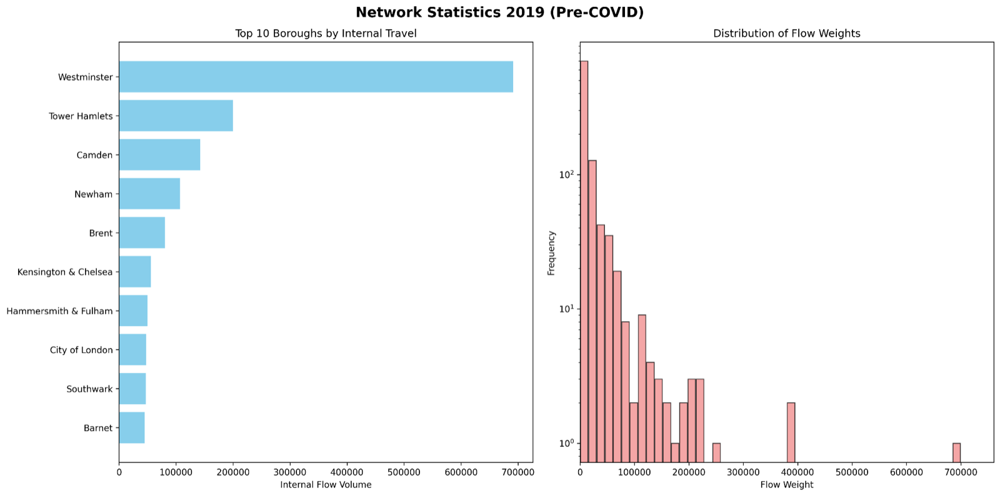
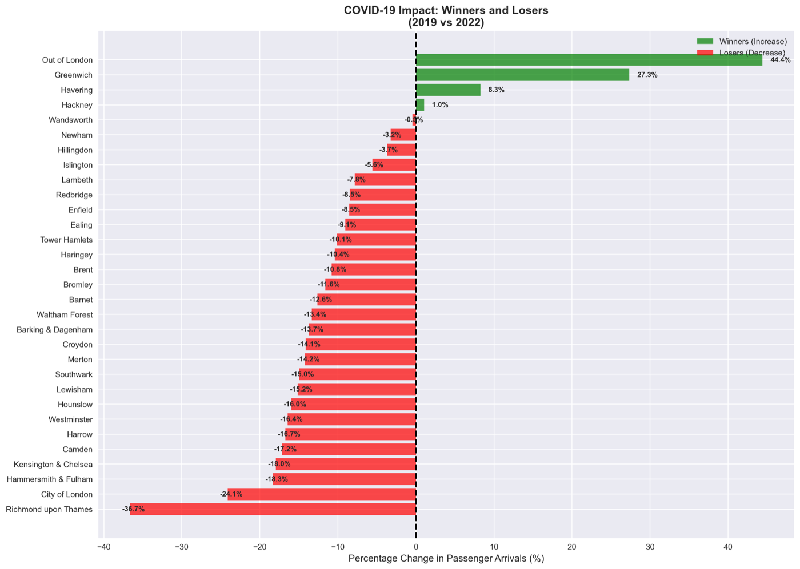
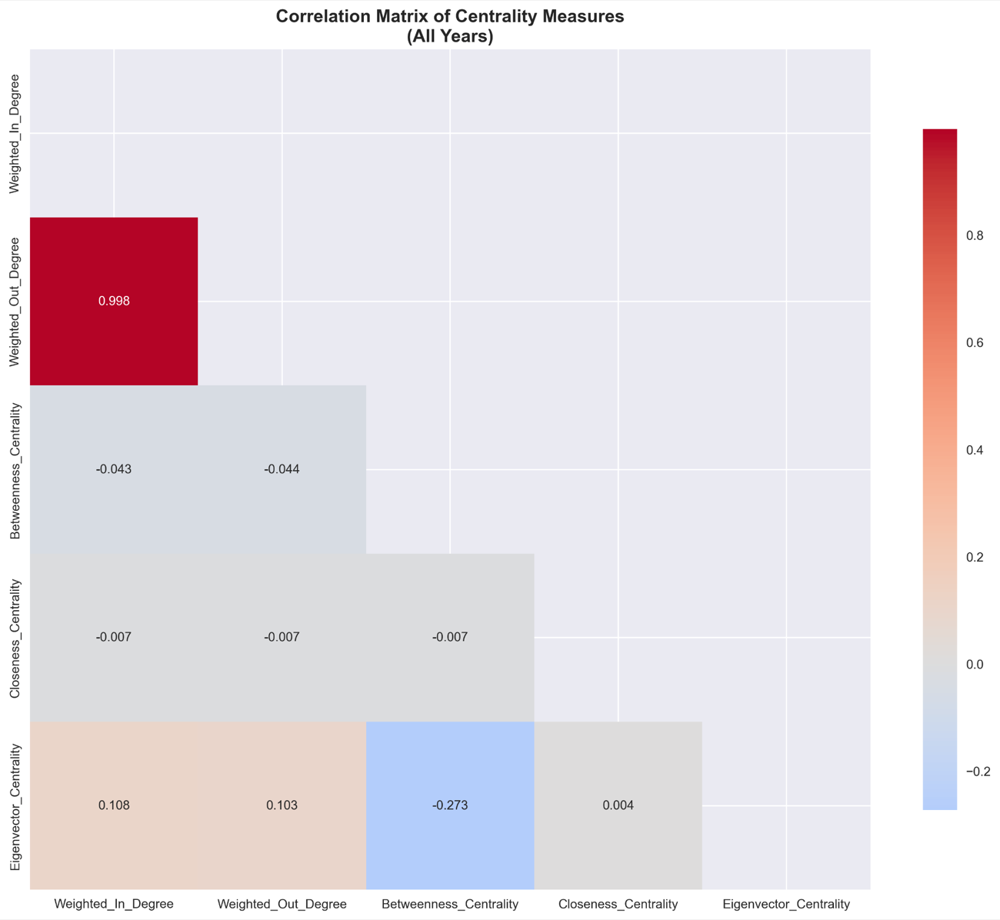

Stop 1
Mind the gap
Over the last 25 years London extended the DLR several times, launched the London Overground in 2007 and opened the Elizabeth line in 2022. Each of these changed which parts of the city are easy to reach. The question behind this project is easy to ask and hard to measure: when the network changes, do house prices follow?
There is a large body of research on exactly this, but very little of it is about London. When researchers treat a rail system as a network and ask whether well-connected places command higher prices, the answer keeps coming back yes. In Kolkata, homes around stations with high closeness and eigenvector centrality sold at premiums of 9 to 40% [1]. Across Chinese cities, a 10% rise in a station's harmonic centrality went with an 11% rise in nearby land prices [2]. Similar results came from Bangkok [3], Hong Kong [4] and Beijing [5], and in Shanghai prices near new subway stations started rising a month before they opened and kept rising for six months after [6].


For London, most of the long-run evidence comes from reports commissioned by the organisations that built the lines or sell homes near them. An evaluation for TfL and the Department for Transport found a 7 to 10% price uplift near Crossrail stations before they even opened [7], and CBRE reported that prices near Elizabeth line stations rose 80% between 2008 and 2023 [8]. These numbers are useful, but they are not independent and rarely show their methods. The academic work that does exist is narrower, such as the effect of the Crossrail announcement on prices in Ealing [9] or a classification of London stations by their role in the network [10]. Nobody had followed the whole network and the whole housing market over decades.

Two lessons from this literature shaped the design. The effect differs from place to place, so it should be measured locally, here for each borough. And it can appear before or after a line opens, so the analysis needs a long time series rather than a single before-and-after snapshot.
Stop 2
Getting the data
Three datasets had to be stitched together, and none of them were designed to be used together.
- UK House Price Index. Monthly average prices for every London borough.
- RODS, 2000–2017. TfL's Rolling Origin and Destination Survey: annual estimates of weekday journeys between Underground stations, from passenger surveys.
- NUMBAT, 2017–2023. TfL's model of rail demand built from ticketing data, train load-weighing and passenger counts, covering the Underground, Overground, DLR and Elizabeth line in 15-minute slots.
The open data portal only had NUMBAT for 2019 and 2022. To fill in the rest, I filed a Freedom of Information request with TfL and received the data for 2017, 2018, 2020, 2021 and 2023.
Then came the unglamorous part. House prices are organised by borough, RODS by station name and NUMBAT by National Location Code, and no two sources spell things the same way. I wrote scrapers to map every Tube, Overground, Elizabeth line and DLR station to its borough from Wikipedia (the 113 Overground stations had to be read one station page at a time) and built a table linking codes to stations for all 472 stations in NUMBAT. Along the way it turned out the 2022 matrices contain 674 codes, because they include junctions and routing points that are not stations at all.
Stop 3
From journeys to networks
With everything matched, each year of journeys becomes a network. Boroughs are the nodes, and the number of people travelling from one borough to another is the weight of the edge between them.
There is a network for every year, for each type of day, for six time bands and for all 96 quarter-hours of the day. Figure 5 shows one of them: a typical weekday in 2019.

The network is built around one place. Westminster's internal travel alone is more than three times that of the next borough, and the flows have a very long tail: a few pairs of boroughs carry huge volumes, while most carry very little.

Stop 4
The pandemic reshuffle
Comparing 2019 with 2022 shows how much the pandemic rearranged travel across the city.
Most boroughs received fewer passengers in 2022 than in 2019. The City of London lost 24% of its arrivals and Richmond upon Thames 37%. A few places grew: Greenwich by 27%, Havering by 8%, and journeys ending outside London by 44%. The office core became less of a magnet, and that kind of shift is exactly what a static map of the network cannot show.

Stop 5
What makes a borough important?
"Well connected" can mean several different things, so each borough gets five scores for every network.
Arrivals
How many journeys end in the borough. A destination.
Departures
How many journeys start there. A place people live and leave from.
Betweenness
How often the borough sits on the busiest routes between other boroughs. A corridor.
Closeness
How easily it reaches every other borough.
Eigenvector
Whether its strongest links lead to other important boroughs.
For the path-based scores, busy links count as short ones (distance is one over the flow), so a route that carries many passengers behaves like a fast connection. Travel communities were found with the Leiden algorithm.

Stop 6
What moves prices
The model compares each borough with itself over time.
Borough fixed effects absorb everything permanent about a place: the river, the schools, the reputation. Year fixed effects absorb everything that hits all of London at once: interest rates, the 2008 crash, the pandemic. What is left is a cleaner question. When a borough's position in the network changes, does its average house price change the following year? Prices are logged and the scores standardised, so each estimate reads as the percentage change in prices for a one standard deviation change in the score, and standard errors are clustered by borough.
Being a destination is capitalised into prices. Being a corridor is not: boroughs that many journeys pass through without stopping carry a small discount, plausibly from the noise, traffic and crowds that come with it. Closeness and eigenvector centrality showed no measurable effect.
Terminus
Where the line goes next
Boroughs are large, and the literature shows that the value of access changes over short distances (Figure 2). The natural next step is to work at station or neighbourhood level. Graph neural networks fit this kind of data well: recent work on Scottish house prices used them together with explainability methods to show which neighbouring areas drive each prediction [11]. RODS and NUMBAT also measure journeys in different ways, so a longer and consistent NUMBAT series would make comparisons across 2017 cleaner.
References
- Chakrabarti, S., Kushari, T., and Mazumder, T. (2022). Does transportation network centrality determine housing price? Journal of Transport Geography, 103, 103397.
- Han, D., and Wu, S. (2023). The capitalization and urbanization effect of subway stations: A network centrality perspective. Transportation Research Part A, 176, 103815.
- Vichiensan, V., Wasuntarasook, V., Prakayaphun, T., Kii, M., and Hayashi, Y. (2023). Influence of urban railway network centrality on residential property values in Bangkok. Sustainability, 15, 16013. CC BY 4.0.
- He, S. Y. (2020). Regional impact of rail network accessibility on residential property price: Modelling spatial heterogeneous capitalisation effects in Hong Kong. Transportation Research Part A.
- Zhou, Y., Tian, Y., Jim, C. Y., Liu, X., Luan, J., and Yan, M. (2022). Effects of public transport accessibility and property attributes on housing prices in polycentric Beijing. Sustainability, 14, 14743. CC BY 4.0.
- Wang, J., and Tang, H. Subway expansion and housing price dynamics: Accessibility improvements and spatial heterogeneity in Shanghai. Preprint.
- Arup for Transport for London and the Department for Transport (2022). Crossrail baseline evaluation: Pre-opening property impacts report.
- CBRE (2024). The Elizabeth Line: The impact on London's housing market.
- Comber, S., and Arribas-Bel, D. (2017). "Waiting on the train": The anticipatory (causal) effects of Crossrail in Ealing. Journal of Transport Geography.
- Zhang, Y., Marshall, S., and Manley, E. (2021). Understanding the roles of rail stations: Insights from network approaches in the London metropolitan area. Journal of Transport Geography, 94, 103110.
- Karamanou, A., Brimos, P., Kalampokis, E., and Tarabanis, K. (2024). Explainable graph neural networks: An application to open statistics knowledge graphs for estimating house prices. Technologies, 12(8), 128.
Figures 1 and 2 are reproduced from open-access articles under the Creative Commons Attribution 4.0 licence. All other figures are from the paper or the project repository. Data: UK House Price Index (Open Government Licence v3) and Transport for London RODS and NUMBAT (Open Government Licence).